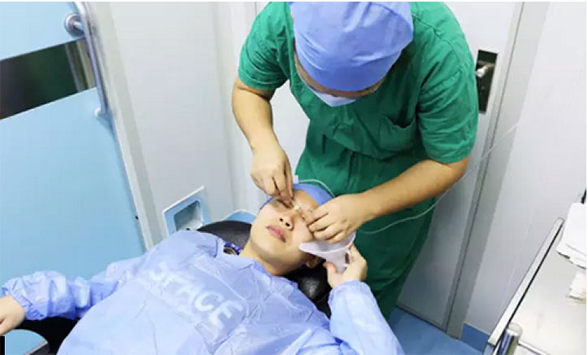
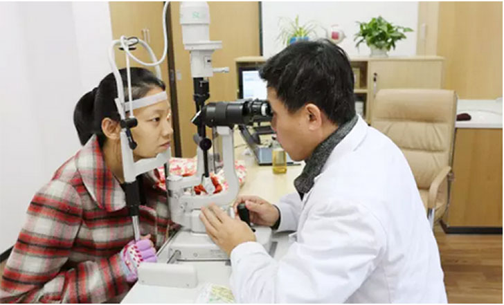
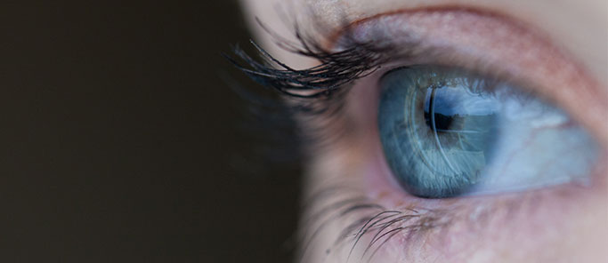
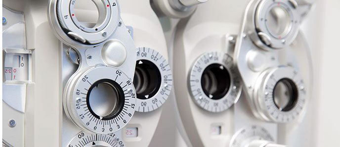

2017年6月1-3日，由林鸿源医师所带领的由台湾医师和国内专家组成的太学眼科医师团队受邀参加了在杭州国际会展中心召开的“第30届亚太白内障及屈光手术医师学会年会暨第18届中国白内障学术会议”。医师团队受邀参加了在杭州国际会展中心召开的“第30届亚太白内障及屈光手术医师学会年会暨第18届中国白内障学术会议”
慧是典型的高度近视者，左右眼裸眼视力均为850度，散光150度。按照小慧的话来说，摘下眼镜的她根本没办法正常生活。经过精密的近视激光术前检查，小慧较终确定了手术方案，由高森院长亲自手术。高院长说小慧虽是高度近视，但检查显示小慧的角膜厚度足够进行近视激光手术，没有问题。于是，在上周三小慧就进行了近视激光手术，仅仅十分钟，小慧终于摆脱了十几年的近视史。


术前视力检查
小慧是典型的高度近视者，左右眼裸眼视力均为850度，散光150度。按照小慧的话来说，摘下眼镜的她根本没办法正常生活。经过精密的近视激光术前检查，小慧较终确定了手术方案，由高森院长亲自手术。高院长说小慧虽是高度近视，但检查显示小慧的角膜厚度足够进行近视激光手术，没有问题。

上一篇
渐冻症兄弟获得温暖

下一篇
爱牙日